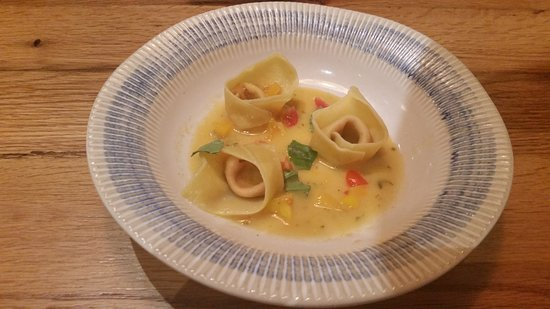

Makarna Yapımı

En kolay yemekler arasında başı çeken makarnanın nasıl yapıldığına yönelik sorular Google’da en çok araştırılan konulardan biri. İlk defa yemek yapacak olanlar, üniversite öğrencileri, yeni evlenenler için güzel bir yemek olan makarna tarifini verdik.
Önerilen Tarif
-
Orta boy bir tencereye 8 bardak soğuk su dökülür ve üzerine 1 silme yemek kaşığı tuz eklenip, tencerenin kapağı kapatılır ve açık ateşte makarna suyu kaynayana kadar bırakılır.
-
Su kaynadıktan sonra, 250gr. makarna kaynamakta olan suyun üzerine dökülür ve pişmeye başlar, ama bu kez tencerenin kapağı kapatılmaz. Makarnayı tencereye koyduktan sonra, ilk birkaç dakika 3-5 sefer karıştırırsanız, makarnanın birbirine yapışmasını da önlersiniz, çubuk makarna yapıyorsanız 7-8 defa karıştırmanız daha uygun olur, böylece çubuklar pişerken birbirine dolanıp yapışmaz. Tencerenizin yapısına ve makarnanın türüne göre pişme süresi 10-15 dakikadır.
Malzemeler
8 su bardağı su
1 silme yemek kaşığı tuz
250 gr. makarna(250gr.lık paket veya 500gr.lık paketlerde yarım paket)
Yarım fincandan biraz fazla sıvı yağ (En sağlıklısı zeytinyağıdır ama bazıları makarnada kokusunu sevmez, tadını sevdiğiniz başka bir sıvı yağ da kullanabilirsiniz.)
Makarna Süzgeci